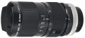

器材库 > 35mm画幅MF变焦镜头 > FD 35-70/2.8-3.5 S.S.C.

详细规格
镜头类型
标准变焦镜头
发布日期
1973-12
厂家推荐价格
100,000.00 （日元）
焦距
35mm-70mm
最大光圈
f/2.8-3.5
最小光圈
f/22
镜头结构
10片/10组
光圈叶片
8片
最近对焦距离
100cm, 微距30cm
最大放大倍率
0.087
滤镜口径
58mm
镜头卡口
Canon FD/FL/NEW FD
防抖
否
颜色
黑色
尺寸
69×120mm
重量
575g
附件
镜头套, 橡胶遮光罩
飘灯2008-06-12 23:144.92 分
操作性 5.00耐用性 5.00性价比 5.00解像力 5.00色彩还原 5.00机械结构 4.50
rechte2007-08-18 14:424.92 分
操作性 4.50耐用性 5.00性价比 5.00解像力 5.00色彩还原 5.00机械结构 5.00
夜之眼2005-10-30 18:254.92 分
操作性 5.00耐用性 5.00性价比 5.00解像力 5.00色彩还原 4.50机械结构 5.00
产品图 / 样片
佳能 FD 35-70/2.8-3.5 S.S.C.
评测 / 相关文章
该产品暂无存档的评测文章